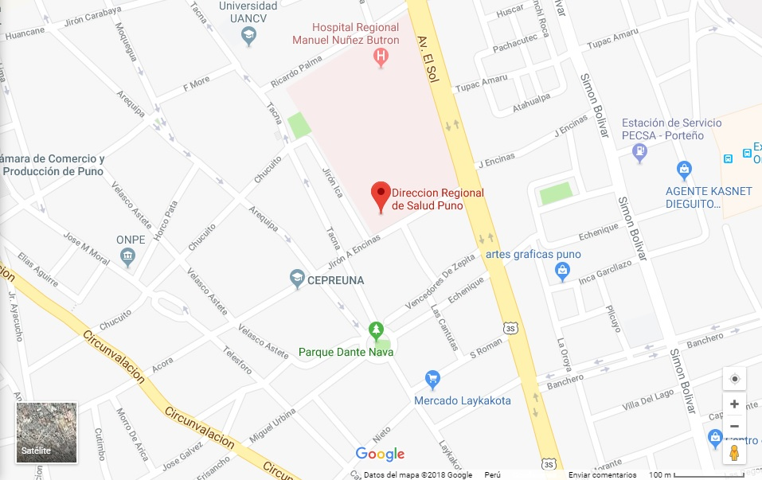

La Región de Salud Puno su ámbito de acción es todo el Departamento de Puno que a la vez hace la Región Puno. La Región de Salud de Puno, cuyo ámbito de trabajo está compuesto por 13 provincias y 109 distritos, con una población total de 1’338,163 habitantes (2009), de los cuales tenemos que el 57.7% de dicha población es rural y el 42.3% urbana, con habla de lengua materna quechua de 43%, Aymará 33% y Castellano 23 %.
